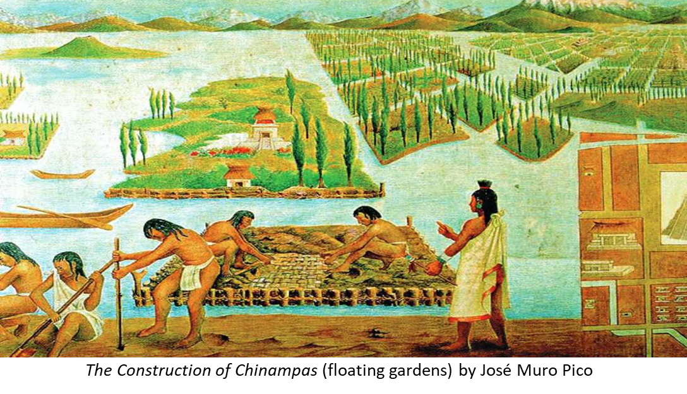

Hydroponics has been around in different forms for thousands of years. Ancient civilizations like the Babylonians and the Aztecs used early versions of soilless farming. In the 1600s, Jan van Helmont showed that plants didn't get their mass from soil, which helped scientists understand plant growth better. In the 1800s, scientists like De Saussure, Boussingault, Sachs, and Knop discovered the nutrients plants need and grew plants in mineral water solutions. This research became the foundation of modern hydroponics.
In the 20th century, William Frederick Gericke helped popularize hydroponics as a real farming method. Since then, hydroponics has been used in commercial farming, research labs, and even urban agriculture. Today, it is seen as an important technology for growing food in places with limited space or water—and now, for growing food in space.